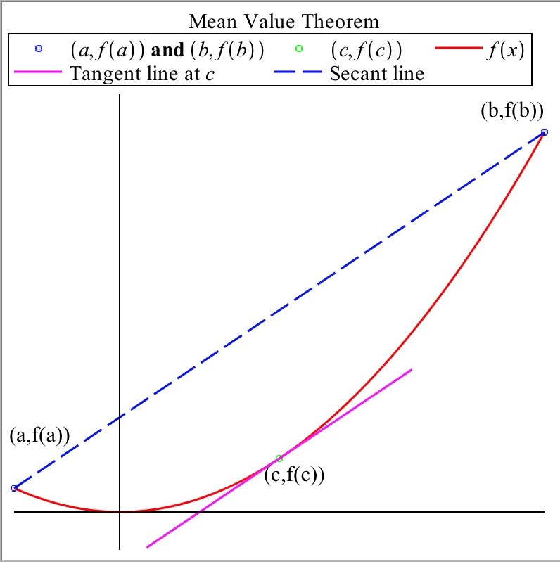

Introduction
-
Dylan
- I don’t know about this theorem...it seems pretty mean...
-
Julia
- No no, they mean mean as in average!
-
Dylan
- Oh, so were looking at the average value of a function?
-
James
- Not quite, actually the mean value theorem states the following: If
is continuous on and differentiable on , then there exists at least one
value in such that
-
Dylan and Julia
- Maybe we should do an example...that looks pretty
confusing...
-
ALTOGETHER
- Let’s dive in!
Guided Example
Take a look at the following graph illustrating the Mean Value Theorem:

What do you notice about the tangent line at with respect to the secant line from
to ?
They are parallel. The slope of the tangent line is half that of the secant line. The tangent line is perpendicular to the secant line. The tangent line intersects the
secant line.
What does this mean the derivative of is at ?
If was zero for all points in the interval, what could always be said about on that
interval?
is positive at all points on the interval. is negative at all points on the
interval. is a constant on the interval. does not exist on the interval.
Let be two points in . Since is continuous on and differentiable on , by
the Mean Value Theorem we know for some in the interval . Since we
see that . Since and were arbitrarily chosen, must be constant on the
interval.
Use on the interval for the following questions.
To graph on the domain in
desmos type: sin(2x)0¡=x¡=2pi.
Graph
What values for satisfy the mean value theorem?(figure out where the derivative
equals the slope of the secant line!)
On Your Own
Let .
Examine the graph. Does the function satisfy the hypothesis of the Mean Value
Theorem on the interval ?
Yes No
Consider .
Over which of the following regions does the function satisfy the hypothesis of the
Mean Value Theorem?
Apply the Mean Value Theorem from [1, 4], determining what points experience the
same instantaneous change as the entire interval.
Seeing a police officer on the side of the road, your friend Tom slows down to 35
mph. However, once the officer pulls over someone else for speeding, Tom speeds up
to 70 mph. Half an hour and 35 miles later, Tom checks his navigation app and sees
another police officer is up ahead, slowing himself down to the legal 35 mph.
However, the police officer still pulls Tom over, saying he had been radioed by the
first officer right when Tom passed, so he could prove that Tom was going 70 mph at
some point in the last half hour. Tom is furious about the clearly faulty
reasoning of the police officer. Let be the position of Tom’s car at time
.
Thanks to the Mean Value Theorem, you know that the police officer is in the
right. Using , explain to Tom why the officer had a valid reason to ticket
him.
What would Tom’s average speed have to be to get 35 miles in a half
hour?
Talking to Tom, you find out that he accelerated to 70 mph in only 5 seconds after
passing the officer. Prove that at some point, Tom had an acceleration of over
25,000 .
What would Tom’s average change of velocity have to be to go
from 35 mph to 70 mph in 5 seconds(make sure to convert the seconds to
hours)?
In Summary
The
Mean Value Theorem states that for any function , if is continuous on and
differentiable on , then there exists at least one value such that
This means that there is a point such that the secant line from has the same slope
as the tangent line at . It’s important to note that this means if for all on , then is
constant on .